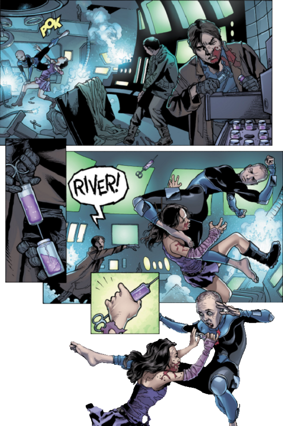

The galaxy still reels from the Unification War, in which the Alliance cemented its dominance, crushing the Browncoat resistance. Deep in the blackness of space, a Firefly-class vessel named Serenity shuttles between planets, taking jobs both legal and otherwise. The captain of the ship, Malcolm Reynolds, and first mate Zoe Washburne remain Browncoats at heart, dodging bounty hunters and making friends and enemies throughout the 'verse. Among Serenity's crew is Dr. Simon Tam, who rescued his genius sister River from Alliance experiments and found refuge on Serenity. River, prized and feared by the Alliance for her psychic abilities, was pursued relentlessly across the 'verse. In their fight to elude the Alliance, Mal Reynolds and his crew revealed that the Reavers, an interstellar breed of cannibal pirates, were the result of another Alliance experiment [gone wrong]. In a bloody last stand, Mal broadcasts this to the 'verse, proving it to the operative sent to kill River. As the outlaw crew try to cope with the loss of two of their own, the Alliance and the rebels both ask ... where is Serenity?
Thus goes the introduction of a new six-issue comic book series Serenity: Leaves on the Wind, which resumes the story of Joss Whedon's cult television show Firefly, and its subsequent film adaptation Serenity, and continues the narrative shortly after the events of the film.
To those without the prerequisite knowledge (Firefly fans can skip this section), Firefly is a space-western television series, set in the year 2517, after the arrival of humans in a new star system. The show follows the adventures of a motley crew of Serenity, a Firefly-class starship.
In the future, the only two surviving superpowers, the United States and China, eventually fuse together to form a single colossal federal state, called the Alliance. The central planets of the star system are firmly under Alliance control, but the territory of the outlying planets and their moons resemble more the 19th-century American Wild West, with local governments and little Alliance’s authority. Settlers, merchants, travellers, outlaws and refugees who form part of this pioneer culture that exists on the fringes of the star system have relative freedom from the central government, but lack the protection and the assorted facilities of the high-tech civilization that exists on the inner worlds. In addition, the outermost, extremely remote parts of empty space are occupied by the feared Reavers, a savage, animalistic group of nomadic, mutated humans who practice cannibalism.
The story explores the lives of a group of nine dissimilar people who found themselves on the losing side of a space civil war and who now make a living on the outskirts of society, as crew members and passengers of the spaceship Serenity. The ship was named after the Battle of Serenity Valley, the decisive conflict of the Unification War, where Malcolm Reynolds and Zoe Alleyne Washburne are one of the few survivors of their rebel unit, which lost the battle. They are now eking out a living on the edges of space in their Firefly-class vessel, taking odd jobs even if they are often illegal. They also take on passengers to supplement their income. For better or worse, they find out that one of these passengers has a dark secret that will have unforeseen consequences for all those aboard Serenity and will change their destinies for ever.
The comic book, published by Dark Horse Comics, was written by Joss Whedon's younger brother Zack, and its subtitle borrows from the quotation of the late Hoban 'Wash' Washburne, husband of Zoe and the former pilot of Serenity.
Wash's state of mind and his flying style, while piloting Serenity, was often swinging between near-panic and Zen-like calm. The concentration technique he eventually developed seemed to be in direct contrast to the degree of danger he believed the ship was in at any particular moment, acting the most calm when facing the greatest danger, thus saving Serenity and its crew from a certain destruction on more than one occasion. His mantra, which he recited during any precarious situation, was: "I am a leaf on the wind. Watch how I soar."
Zack Whedon's storytelling is convincing, while Georges Jeanty's layouts are clear and his artwork mostly solid. Regrettably, the character likeness is a bit patchy. Whereas one cannot expect this to be

of the same quality as the uncannily photo-realistic portraits of the crew of Serenity by Dan Dos Santos on the series' covers, it shouldn't be miles away either. In some frames, the resemblance of characters to their TV show counterparts is uncanny, in others you find yourself scratching your head and guessing just who that might be. Apart from this minor imperfection, the duo managed to successfully capture the essence and humour of the original show.